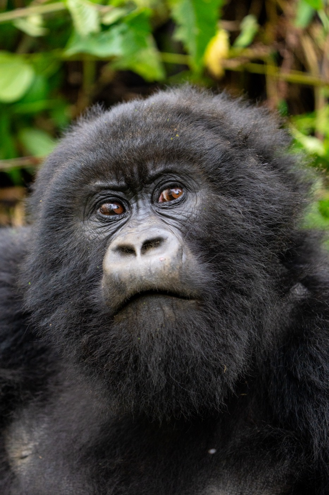

Inspire
Step 1 of 4
Spark curiosity
Wildlife films and stories that make people fall in love with the natural world, made free for classrooms and families.
- Free Content LibraryFirst year
Short, character-driven wildlife episodes and clips for teachers, families and anyone curious. No paywall, made for how people actually watch.
- The Wild ClassroomFirst year
Free, standards-aligned lesson plans and classroom-in-a-box kits built around our species films.
- Explorers in ClassroomsComing next
Live and virtual visits from filmmakers, photographers and scientists. Schools with the least access go first.
- Ambassador NetworkComing next
Creators, athletes, scientists and young people who share the work with their own audiences.